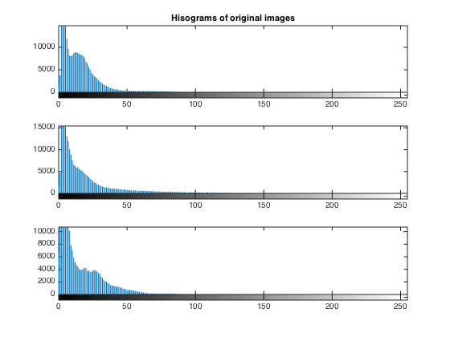
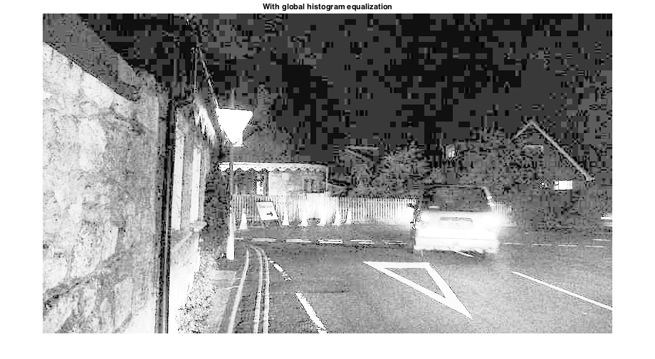
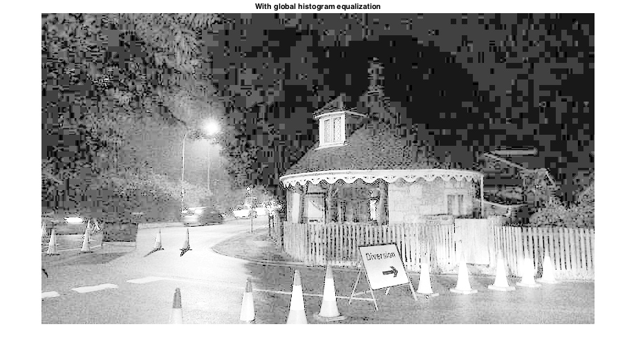
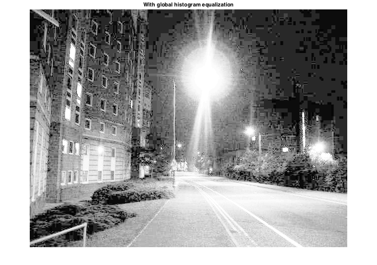
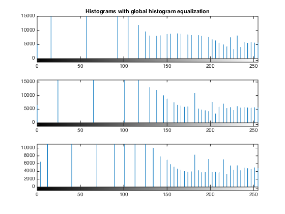
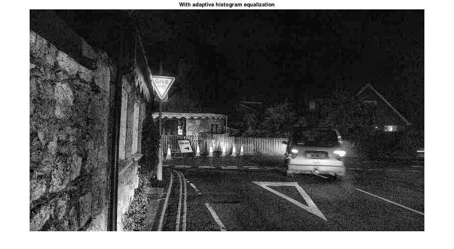
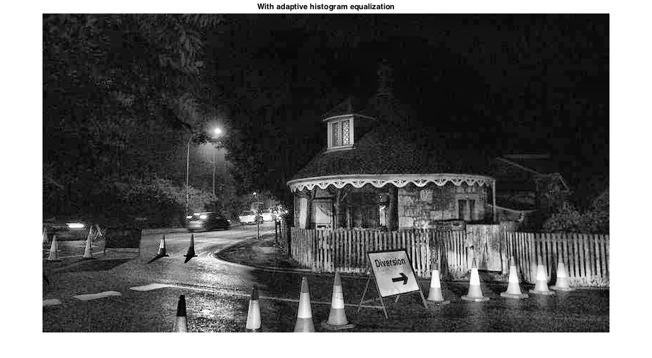
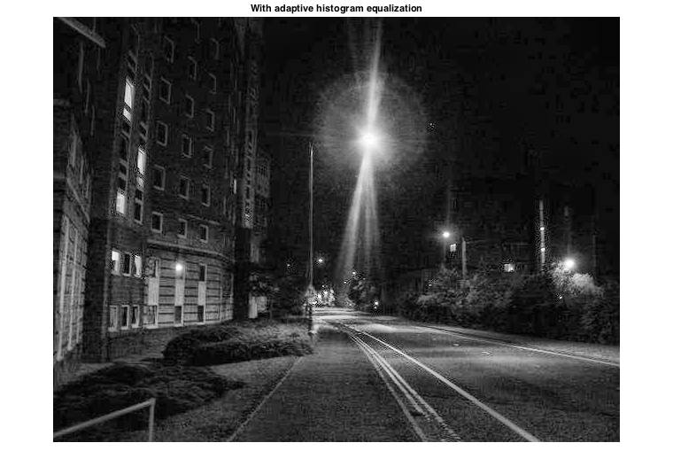
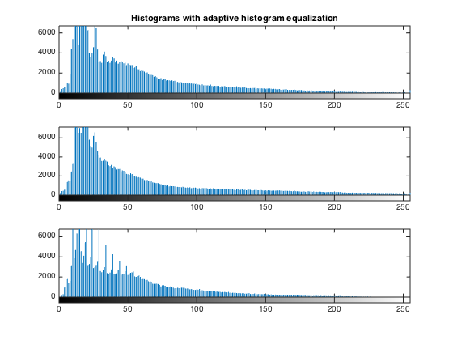

Contents
Question 4. Part A
clear all; close all; road1 = imread('hw1_data/hw1_dark_road_1.jpg'); road2 = imread('hw1_data/hw1_dark_road_2.jpg'); road3 = imread('hw1_data/hw1_dark_road_3.jpg'); figure; subplot(3,1,1); imhist(road1); title('Hisograms of original images'); subplot(3,1,2); imhist(road2); subplot(3,1,3); imhist(road3); % We can see that for road_1 there is a large peak around grayscale level 5 % and then a second smaller peak around the grayscale level 10. This second % peak is due to the dark gray (but not quite black) pixels near the bottom % of the image. This is probably due to the lights of the car illuminating % the road. After these two peaks there is a drop in the histogram. % For road_2, there is a single peak around the grayscale level 5 and then % a gradual decrease. % For road_3, there is a very large peak near the very bottom of the % grayscale levels. This is due to the fact that almost the entire image is % black. It has the fewest bright spots of the three images.
Question 4. Part B
road1_ghist = histeq(road1); road2_ghist = histeq(road2); road3_ghist = histeq(road3); % figure; % subplot(3,2,1); imshow(road1); title('Original Image'); % subplot(3,2,3); imshow(road2); % subplot(3,2,5); imshow(road3); % subplot(3,2,2); imshow(road1_ghist); title('With global histogram equalization'); % subplot(3,2,4); imshow(road2_ghist); % subplot(3,2,6); imshow(road3_ghist); figure; imshow(road1_ghist); title('With global histogram equalization'); figure; imshow(road2_ghist); title('With global histogram equalization'); figure; imshow(road3_ghist); title('With global histogram equalization'); figure; subplot(3,1,1); imhist(road1_ghist); title('Histograms with global histogram equalization'); subplot(3,1,2); imhist(road2_ghist); subplot(3,1,3); imhist(road3_ghist); % We can see that with equalization a lot of detail becomes visible. For % example, in road_1 we can see the trees and the houses in front of the % car. In road_2 we can see the edges of the house better, as well as the % sign towards the left side of the image. In road_3 we can clearly see the % building on the left as well as the building on the right. Both of these % buildings were very hard to make out in the original image. % However, we see a lot of patches showing up in the image equalized % images. This is due to the fact that in histogram equalization, bins % cannot be "split". That is, the number of non-zero bins cannot increase, % and therefore there will be jumps between different grayscale values, not % a gradual transition like we would expect.   
Question 4. Part C
road1_tiles = 16; road1_lim = 0.02; road2_tiles = 16; road2_lim = 0.02; road3_tiles = 16; road3_lim = 0.015; road1_ahist = adapthisteq(road1, 'NumTiles', [road1_tiles, road1_tiles], 'ClipLimit', road1_lim); road2_ahist = adapthisteq(road2, 'NumTiles', [road2_tiles, road2_tiles], 'ClipLimit', road2_lim); road3_ahist = adapthisteq(road3, 'NumTiles', [road3_tiles, road3_tiles], 'ClipLimit', road3_lim); display(['For Road_1: tiles = ' num2str(road1_tiles) 'x' num2str(road1_tiles) ' , Clipping limit = ' num2str(road1_lim) ]); display(['For Road_2: tiles = ' num2str(road2_tiles) 'x' num2str(road2_tiles) ' , Clipping limit = ' num2str(road2_lim) ]); display(['For Road_3: tiles = ' num2str(road3_tiles) 'x' num2str(road3_tiles) ' , Clipping limit = ' num2str(road3_lim) ]); % figure; % subplot(3,2,1); imshow(road1_ahist); title('With adaptive equalization'); % subplot(3,2,3); imshow(road2_ahist); % subplot(3,2,5); imshow(road3_ahist); % subplot(3,2,2); imshow(road1_ghist); title('With global equalization'); % subplot(3,2,4); imshow(road2_ghist); % subplot(3,2,6); imshow(road3_ghist); figure; imshow(road1_ahist); title('With adaptive histogram equalization'); figure; imshow(road2_ahist); title('With adaptive histogram equalization'); figure; imshow(road3_ahist); title('With adaptive histogram equalization'); figure; subplot(3,1,1); imhist(road1_ahist); title('Histograms with adaptive histogram equalization'); subplot(3,1,2); imhist(road2_ahist); subplot(3,1,3); imhist(road3_ahist); % We can see that when we apply adaptive histogram equalization as opposed % to global histogram equalization we are able to pull out detail from the % images without adding noise and "patchiness" to the image. We can still % see the trees and the house in road_1, the edges of the roof and the road % sign in road_2, and the buildings on the left and right in road_3.
For Road_1: tiles = 16x16 , Clipping limit = 0.02 For Road_2: tiles = 16x16 , Clipping limit = 0.02 For Road_3: tiles = 16x16 , Clipping limit = 0.015   